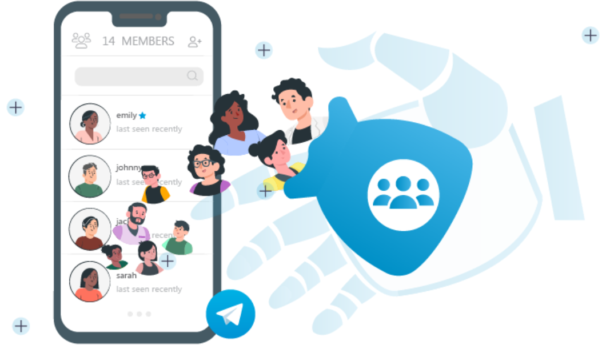

Telegram机器人是什么？
Telegram机器人是由用户创建的自动化程序，可以与Telegram用户进行交互。机器人可以执行各种任务，如自动回复消息、提供信息、管理群组、发送通知等。通过Telegram Bot API，开发者可以编写代码，使机器人响应特定命令或事件，增强用户体验或实现特定功能。
Telegram机器人概述
Telegram机器人的定义与功能
- 自动化交互：Telegram机器人是一种自动化程序，能够与Telegram用户进行互动，执行用户设定的任务。用户可以通过编写代码让机器人自动响应指令、发送消息、提供信息等。
- 丰富的功能：Telegram机器人不仅可以发送文字信息，还可以处理图片、音频、视频、文件等多种格式的内容。此外，机器人还能执行复杂的操作，如调用外部API、执行计算任务等。
- 灵活的定制：机器人可以根据需求定制各种功能，例如自动回复、提醒、翻译、天气查询等，使其能够满足不同场景下的需求。开发者可以使用Telegram Bot API进行二次开发，增强机器人的功能。
机器人在Telegram中的应用场景
- 群组管理：在大型群组中，Telegram机器人常用于自动化管理，比如自动清理垃圾信息、管理成员权限、执行常见命令等。机器人可以帮助群组管理员提高效率，确保群组的秩序。
- 客服与支持：许多企业和服务提供商使用Telegram机器人作为自动化客服工具，回答常见问题、提供客户支持、处理用户请求等，减少人工客服的负担，提高服务效率。
- 信息推送与通知：Telegram机器人广泛应用于信息推送，如新闻、天气、股票信息等。用户可以订阅特定的机器人，获取实时更新。此外，机器人还可以用于发送重要通知或提醒，帮助用户更好地管理日程和任务。
如何创建Telegram机器人
使用BotFather创建机器人
- 启动BotFather：BotFather是Telegram官方提供的一个机器人，用于创建和管理其他机器人。首先，在Telegram中搜索“BotFather”并点击进入对话窗口。
- 创建新机器人：在BotFather对话框中输入命令“/newbot”，并按照提示为机器人命名以及设置用户名。用户名必须是唯一的，以“_bot”结尾。
- 获取机器人API令牌：创建机器人后，BotFather会向你发送一个API令牌，这个令牌是用来与Telegram服务器交互并控制机器人功能的密钥。确保保存该令牌，并妥善保管，不要泄露给他人。
获取API令牌并设置权限
- API令牌的用途：API令牌是与Telegram服务器建立连接的凭证，开发者需要使用这个令牌通过Telegram Bot API发送请求、获取用户消息、控制机器人行为等。
- 设置机器人权限：你可以通过BotFather设置机器人的权限，例如是否允许用户向机器人发送消息，是否启用私人聊天等。输入命令“/setprivacy”可以设置机器人是否允许被群组内的成员直接发消息。
- 配置机器人功能：在BotFather中，用户还可以进行其他设置，如设置机器人的描述、指令列表和自定义命令等。根据需求，你可以为机器人配置不同的功能和响应方式。
Telegram机器人常见功能
自动回复与消息处理
- 自动回复功能：Telegram机器人可以设定自动回复规则。当用户向机器人发送特定消息或命令时，机器人会根据预设的规则进行自动回复。例如，用户发送“/help”时，机器人会自动发送帮助信息。
- 关键词触发：开发者可以根据特定关键词设置回复内容，当用户在聊天中输入特定词汇或句子时，机器人会自动识别并提供相应的回应。此功能在客服、信息查询等场景中广泛应用。
- 多媒体处理：除了文字回复，Telegram机器人还可以处理多种格式的消息，如图片、音频、视频、文件等。开发者可以编写代码让机器人根据用户的需求自动发送这些多媒体文件，提升互动性和功能性。
集成第三方服务与API接口
- 集成外部API：Telegram机器人可以与外部服务或平台的API进行集成，获取实时数据或触发外部操作。例如，结合天气API，机器人可以根据用户的请求提供实时天气信息。
- 自动化任务：通过API接口，Telegram机器人可以自动化执行各种任务，如从数据库获取数据、发送通知、处理支付请求等。用户只需向机器人发送命令，机器人便能自动完成任务。
- 支持多平台集成：Telegram机器人可以与其他社交媒体平台、数据分析工具、电子商务平台等集成。通过API，机器人能够在不同平台间协作，提升系统的整体效率和功能扩展性。
管理Telegram机器人权限与设置
控制机器人对群组的权限
- 设置管理员权限：在群组中，Telegram机器人可以被设置为管理员，从而可以执行一些管理任务，如删除消息、静音用户、管理群成员等。通过选择“管理群组”中的“权限”，你可以决定机器人的管理权限，如是否可以删除消息或封禁成员。
- 限制机器人参与的功能：可以根据群组的需要，限制机器人是否能发送消息、查看成员列表、读取新消息等。通过“群组设置”中的“机器人权限”，你可以选择启用或禁用特定的操作。
- 设置自定义命令权限：如果机器人在群组内提供特定命令，可以控制这些命令的访问权限。比如，设置只有管理员才能使用某些命令，从而避免机器人滥用权限或被滥用。
设置机器人的隐私和安全选项
- 限制消息接收范围：为了保护用户隐私，Telegram允许管理员设置机器人仅能与指定用户或群组内的成员互动。你可以通过“隐私设置”中的“谁可以与我互动”来限制机器人接收消息的来源。
- 防止滥用和垃圾信息：通过启用“隐私设置”中的“禁止陌生人发消息”选项，管理员可以避免不相关的用户或陌生人直接向机器人发送信息，减少滥用和垃圾信息的风险。
- 数据保护和加密：为了保证机器人和用户之间的信息传输安全，管理员可以在Telegram的API设置中启用额外的加密保护措施，确保数据不会在传输过程中被第三方窃取或篡改。
如何使用Telegram机器人进行群组管理
机器人在群组中的自动化管理功能
- 自动删除不当消息：Telegram机器人可以自动扫描群组中的消息内容，并根据预设的规则删除包含敏感词、不当内容或广告的消息，确保群组的内容合规且有序。
- 成员管理：管理员可以配置机器人以自动管理群组成员。例如，机器人可以自动欢迎新成员、向退出的成员发送感谢消息、或根据成员的行为自动禁言或移除成员。
- 自动化反馈和提醒：机器人可以设置自动发送提醒和通知，例如定期发布群组规则、活动提醒、生日祝福等，保持群组活跃并增强互动性。
自定义机器人命令和功能设置
- 创建自定义命令：开发者可以根据需求创建自定义命令，让群组成员通过输入特定命令与机器人进行互动。例如，成员输入“/help”时，机器人会自动提供帮助文档，或输入“/info”时，提供群组相关的动态和更新。
- 配置机器人响应：机器人可以根据不同的消息类型（文字、图片、链接等）设定不同的响应行为。例如，当用户发送带有特定关键词的消息时，机器人可以触发对应的功能，返回预定的信息或执行操作。
- 集成外部服务：通过使用外部API，机器人可以扩展其功能，例如查询天气、提供股票信息、翻译文本等。通过集成其他服务，机器人可以在群组内提供更多有用的功能，提升群组成员的使用体验。
Telegram机器人如何工作？
Telegram机器人通过Telegram Bot API与Telegram服务器进行交互，执行预定的任务和命令。机器人可以自动回复用户消息、处理请求、管理群组，甚至集成第三方服务，提供信息和执行复杂操作。
如何创建一个Telegram机器人？
用户可以通过Telegram的BotFather创建机器人。首先在Telegram中找到BotFather，使用命令“/newbot”来创建一个新机器人，按照提示设置机器人的名称和用户名。完成后，BotFather会提供一个API令牌用于编程控制机器人。
Telegram机器人可以执行哪些任务？
Telegram机器人可以执行多种任务，包括自动回复用户消息、提供信息、管理群组成员、集成外部API服务、发送定时通知等。通过编写代码，开发者可以根据需要定制机器人的功能，满足不同场景的需求。
其他新闻

怎么用谷歌账号登录电报？
Telegram不支持直接使用Google账号登录。要登录Telegram，你需要使用手机号码注册或登录。首次 […]
2024 年 09 月 22 日
Telegram可以看到对方的电话号码吗？
在Telegram中，用户只能看到已保存联系人中的电话号码。如果对方没有将你保存为联系人，或者你没有对方的电话 […]
2024 年 11 月 14 日
Telegram怎么更改下载路径？
在Telegram桌面版中，点击左下角的“设置”图标，然后选择“高级设置”。在这里，你可以找到“下载路径”选项 […]
2025 年 03 月 15 日

TG如何拉人进群？
要拉人进Telegram群，可以通过以下方式：打开群组，点击群组名称进入设置。点击“邀请成员”或“分享链接”按 […]
2024 年 12 月 25 日